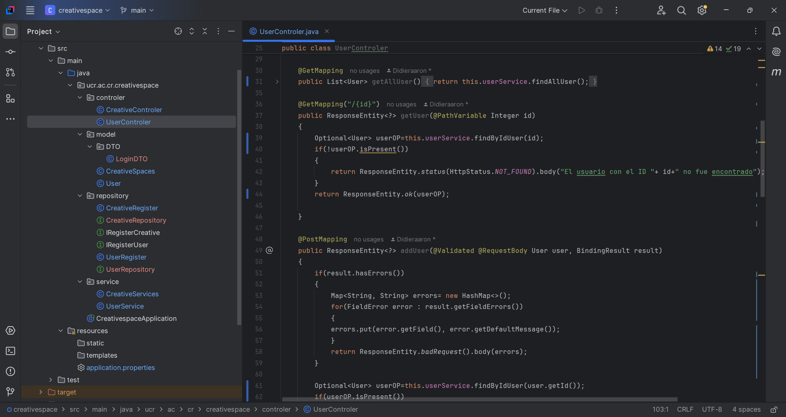
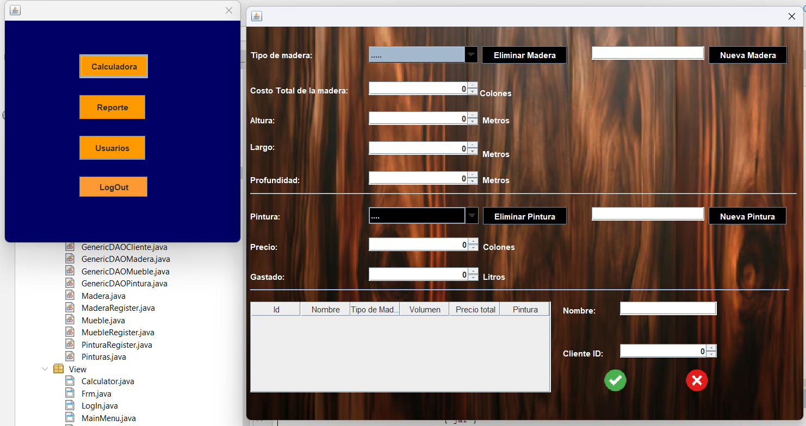
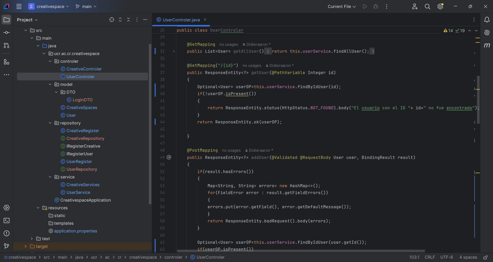

CreativeSpaces proyecto de clase:
Proyecto N1:
Profe no tengo mas perdí muchos archivos por tocarle sin querer el boot al windows
CreativeSpaces proyecto de clase:
Profe no tengo mas perdí muchos archivos por tocarle sin querer el boot al windows